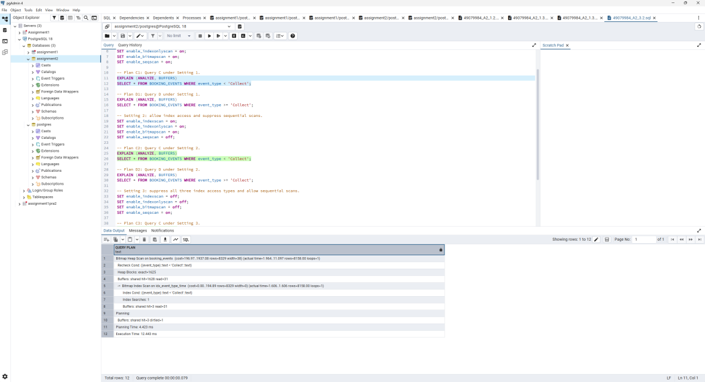
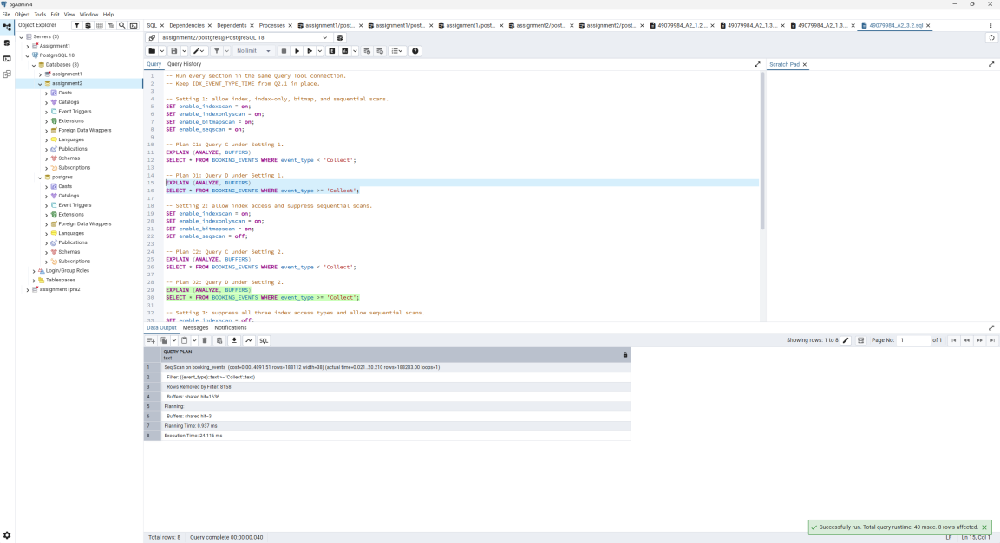
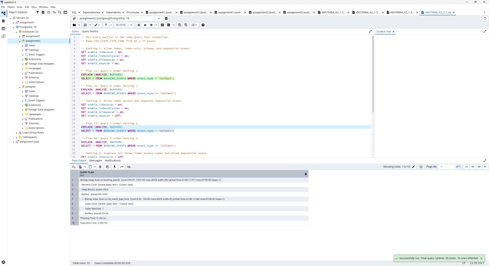
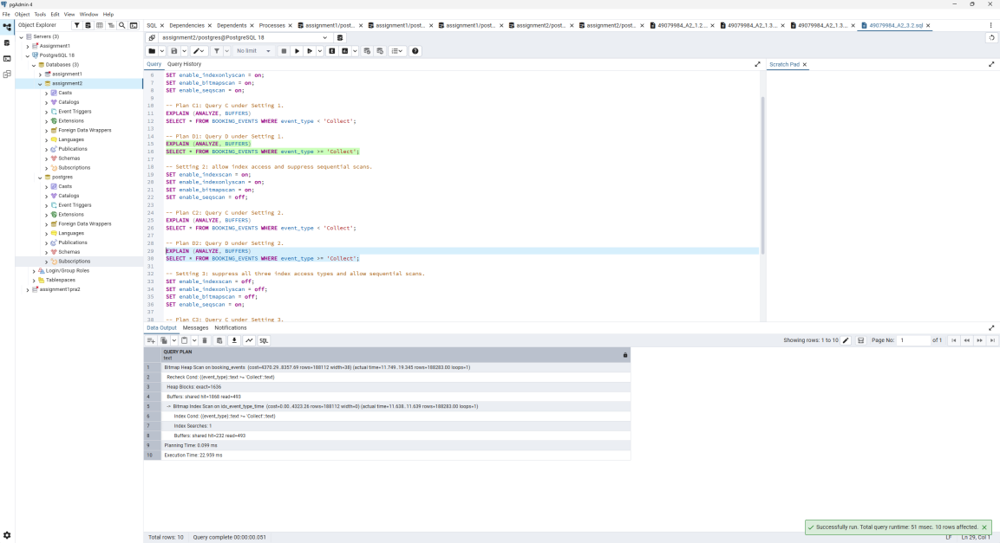
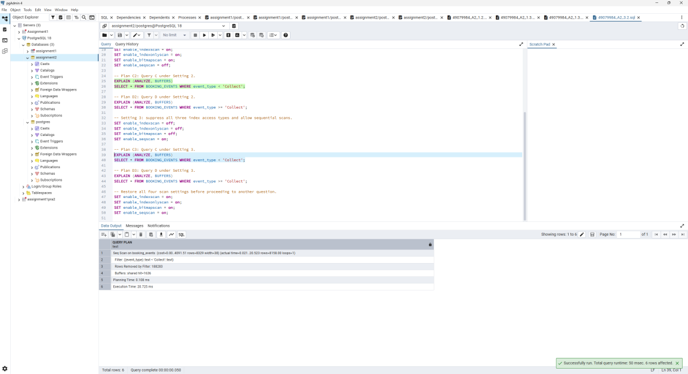
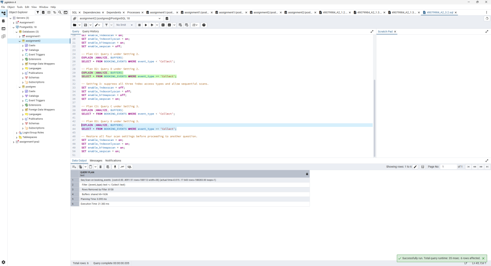
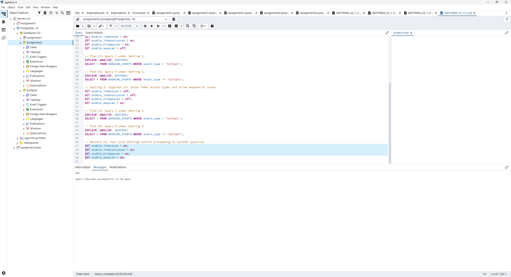

Q3.2两条查询 × 三组开关：六份计划
先看懂题目在要求什么，再跟随数据、代码和真实证据，练习用自己的话解释。
英文原题 · Original task
PostgreSQL allows you to influence the query planner with runtime configuration parameters in psql. https://www.postgresql.org/docs/17/runtime-config-query.html In this section we will suppress the use of several different scan types in order to compare queries. Suppressing plan types is not recommended for production, but is useful for understanding why one plan would be chosen over another. Report and explain the execution plan for the following two queries (C & D): 3. with both index and sequential scans enabled; 4. with index scans enabled and sequential scans suppressed; 5. with index scans suppressed and sequential scans enabled. Explain why the query planner might choose one method over another. You should refer to the reported times and costs from the execution plan, the number of rows fetched, your knowledge of query planning (and anything else you feel is relevant). Note: For this question, bitmap and index-only scans count as index scans too. The index IDX_EVENT_TYPE_TIME from Q2.1 should still be in place. Query C: SELECT * FROM BOOKING_EVENTS WHERE event_type < 'Collect'; Query D: SELECT * FROM BOOKING_EVENTS WHERE event_type >= 'Collect'; (2 marks for explaining up to 6 possible query plans; 2 marks for explaining the query planner's choices.) Between them, Queries C and D return every row of BOOKING_EVENTS exactly once — they differ only in which side of 'Collect' they take. Your explanation should account for why that is enough to change the plan. Be sure to reset index, bitmap, index-only and sequential scans back to on before proceeding to another question.


英文只合并PDF版式换行；提示、给定代码、分值均保留。原页图是版式及图示核对依据。答案报告是另一份文件，见第08节。
中文对照翻译
PostgreSQL允许通过psql运行时配置参数影响规划器。本节抑制几种扫描方式以比较查询；生产环境不建议靠抑制计划类型工作，但它有助理解计划为何被选择。原题给出PostgreSQL17查询规划配置文档链接。
报告并解释C、D两个查询在三组条件下的执行计划：（原PDF编号3）索引与顺序扫描均启用；（4）索引启用、顺序扫描受抑制；（5）索引受抑制、顺序扫描启用。说明选择原因，参考时间、成本、行数与查询规划知识。
注意：本题bitmap与index-only也算索引扫描；Q2.1的IDX_EVENT_TYPE_TIME须仍存在。Query C: SELECT * FROM BOOKING_EVENTS WHERE event_type < 'Collect'; Query D: SELECT * FROM BOOKING_EVENTS WHERE event_type >= 'Collect';
解释最多六种计划占2分，解释规划器选择占2分。C与D合起来让表中每行恰好出现一次，两者仅在Collect的哪一侧不同；说明为何足以改变计划。下一题前须将index、bitmap、index-only、sequential四种开关全部恢复on。
以上为原题对照翻译；下一节开始为本站补充教学解释。给定SQL的对象名和字面值不翻译。
这道题究竟要我做什么
这是完整的六个实验格，虽然原题没有编号3.2.1等SQL文件，评分又区分计划解释和规划选择；本页同时覆盖两部分。记录C1/D1/C2/D2/C3/D3、实际开关和全部计划。
| 核对项 | 本题要求 |
|---|---|
| 输入 / 已有条件 | FleetDB初始化脚本，以及前序题创建的对象；按题号顺序学习和实验。 |
| 交付内容 | 完整SQL、相关输出/计划截图，以及报告中的解释。 |
| 原题限制与分值 | Q3.2 Suppressing scan types (4 marks)；具体小问分值以第01节英文原文为准。 |
| 学习建议（非新增评分项） | 能够解释为什么这样写、结果怎样支持题意、改变关键条件会怎样。 |
前置知识与数据库背景
反连接回答“找不到任何匹配者”，而非普通内连接。扫描实验改变访问方法，但不能改变结果语义。BOOKING_EVENTS.event_type是NOT NULL文本，因此C/D两个相反不等式在同一排序规则下合起来恰好覆盖全表。
完整原始 SQL
来源：A2 根目录 / 49079984_A2_3.2.sql。完整保留原逻辑、注释、空行和语句顺序。下方行号按可下载文件的物理行计算。
1-- Run every section in the same Query Tool connection.2-- Keep IDX_EVENT_TYPE_TIME from Q2.1 in place.3 4-- Setting 1: allow index, index-only, bitmap, and sequential scans.5SET enable_indexscan = on;6SET enable_indexonlyscan = on;7SET enable_bitmapscan = on;8SET enable_seqscan = on;9 10-- Plan C1: Query C under Setting 1.11EXPLAIN (ANALYZE, BUFFERS)12SELECT * FROM BOOKING_EVENTS WHERE event_type < 'Collect';13 14-- Plan D1: Query D under Setting 1.15EXPLAIN (ANALYZE, BUFFERS)16SELECT * FROM BOOKING_EVENTS WHERE event_type >= 'Collect';17 18-- Setting 2: allow index access and suppress sequential scans.19SET enable_indexscan = on;20SET enable_indexonlyscan = on;21SET enable_bitmapscan = on;22SET enable_seqscan = off;23 24-- Plan C2: Query C under Setting 2.25EXPLAIN (ANALYZE, BUFFERS)26SELECT * FROM BOOKING_EVENTS WHERE event_type < 'Collect';27 28-- Plan D2: Query D under Setting 2.29EXPLAIN (ANALYZE, BUFFERS)30SELECT * FROM BOOKING_EVENTS WHERE event_type >= 'Collect';31 32-- Setting 3: suppress all three index access types and allow sequential scans.33SET enable_indexscan = off;34SET enable_indexonlyscan = off;35SET enable_bitmapscan = off;36SET enable_seqscan = on;37 38-- Plan C3: Query C under Setting 3.39EXPLAIN (ANALYZE, BUFFERS)40SELECT * FROM BOOKING_EVENTS WHERE event_type < 'Collect';41 42-- Plan D3: Query D under Setting 3.43EXPLAIN (ANALYZE, BUFFERS)44SELECT * FROM BOOKING_EVENTS WHERE event_type >= 'Collect';45 46-- Restore all four scan settings before proceeding to another question.47SET enable_indexscan = on;48SET enable_indexonlyscan = on;49SET enable_bitmapscan = on;50SET enable_seqscan = on;先读整体，再逐行理解
event_type比较是文本排序，不是事件时间或业务阶段。记录轮次中C只有Cancel的8158行，D为其余188283行，共196441行。低选择率C≈4.15%，D≈95.85%，分界方向改变工作量。具体排序依赖collation，不要泛化到任意数据库。
- L1
-- Run every section in the same Query Tool connection.注释要求所有扫描配置与后续 EXPLAIN 使用同一连接；SET 改的是会话，换连接会失去该实验设置。原题要求 psql，Query Tool 是脚本注释中的工具描述，提交应以原题为准。
Source comment: Run every section in the same Query Tool connection.
- L2
-- Keep IDX_EVENT_TYPE_TIME from Q2.1 in place.注释要求保留 Q2.1 的复合索引，避免把“关闭索引路径”误做成删除索引对象。
Source comment: Keep IDX_EVENT_TYPE_TIME from Q2.1 in place.
- L3
（空行）空行用于把相邻语义块分开，帮助区分输入、处理或独立语句；不执行 SQL、不提交事务，也不会重置配置。
A visual separator only; it executes no statement and changes no transaction or setting.
- L4
-- Setting 1: allow index, index-only, bitmap, and sequential scans.第1组允许四种扫描；只是允许规划器考虑各路径，不意味着同一个计划必须同时使用它们。
Source comment: Setting 1: allow index, index-only, bitmap, and sequential scans.
- L5
SET enable_indexscan = on;将当前会话的 enable_indexscan 设为 on，允许普通 Index Scan 路径。SET 不改变数据或删除索引；on 只是允许考虑，不能保证会被选中。off 是规划偏好控制而非所有情况下绝对禁止；仅关闭普通索引不足以关闭位图路径。
Set the session planner option enable_indexscan to on; this affects later plans, not stored data.
- L6
SET enable_indexonlyscan = on;将当前会话的 enable_indexonlyscan 设为 on，允许Index Only Scan（还需覆盖列、可见性等条件） 路径。SET 不改变数据或删除索引；on 只是允许考虑，不能保证会被选中。off 是规划偏好控制而非所有情况下绝对禁止；仅关闭普通索引不足以关闭位图路径。
Set the session planner option enable_indexonlyscan to on; this affects later plans, not stored data.
- L7
SET enable_bitmapscan = on;将当前会话的 enable_bitmapscan 设为 on，允许Bitmap Index/Heap Scan 路径。SET 不改变数据或删除索引；on 只是允许考虑，不能保证会被选中。off 是规划偏好控制而非所有情况下绝对禁止；仅关闭普通索引不足以关闭位图路径。
Set the session planner option enable_bitmapscan to on; this affects later plans, not stored data.
- L8
SET enable_seqscan = on;将当前会话的 enable_seqscan 设为 on，允许Sequential Scan 路径。SET 不改变数据或删除索引；on 只是允许考虑，不能保证会被选中。off 是规划偏好控制而非所有情况下绝对禁止；仅关闭普通索引不足以关闭位图路径。
Set the session planner option enable_seqscan to on; this affects later plans, not stored data.
- L9
（空行）空行用于把相邻语义块分开，帮助区分输入、处理或独立语句；不执行 SQL、不提交事务，也不会重置配置。
A visual separator only; it executes no statement and changes no transaction or setting.
- L10
-- Plan C1: Query C under Setting 1.注释标记计划 C1：在第1组扫描配置下分析 Query C。它与另外五个组合共同覆盖两条查询×三组设置，必须对照相应完整计划，不能把不同配置的数字混用。
Label plan C1 under scan setting 1.
- L11
EXPLAIN (ANALYZE, BUFFERS)EXPLAIN 修饰紧接着的 SQL，输出物理计划；ANALYZE 会真正运行它并记录 actual time、rows 和 loops，BUFFERS 记录缓冲页访问。结果是计划文本而非普通结果表；cost 是优化器估计单位，不能当成毫秒，也不能将父子节点耗时简单相加。
Execute the following query to collect its actual plan and buffer use; estimated cost is not milliseconds.
- L12
SELECT * FROM BOOKING_EVENTS WHERE event_type < 'Collect';按当前数据库字符串排序规则保留 event_type 小于 Collect 的所有事件。这个比较的是类型文字，不是 event_time；SELECT * 需要事件整行。它与 D 对非 NULL event_type 形成互补，具体行数和路径必须看相应版本的实测计划。
Run Query C under the current scan settings; compare text values, not event timestamps.
- L13
（空行）空行用于把相邻语义块分开，帮助区分输入、处理或独立语句；不执行 SQL、不提交事务，也不会重置配置。
A visual separator only; it executes no statement and changes no transaction or setting.
- L14
-- Plan D1: Query D under Setting 1.注释标记计划 D1：在第1组扫描配置下分析 Query D。它与另外五个组合共同覆盖两条查询×三组设置，必须对照相应完整计划，不能把不同配置的数字混用。
Label plan D1 under scan setting 1.
- L15
EXPLAIN (ANALYZE, BUFFERS)EXPLAIN 修饰紧接着的 SQL，输出物理计划；ANALYZE 会真正运行它并记录 actual time、rows 和 loops，BUFFERS 记录缓冲页访问。结果是计划文本而非普通结果表；cost 是优化器估计单位，不能当成毫秒，也不能将父子节点耗时简单相加。
Execute the following query to collect its actual plan and buffer use; estimated cost is not milliseconds.
- L16
SELECT * FROM BOOKING_EVENTS WHERE event_type >= 'Collect';保留 event_type 按字符串排序大于或等于 Collect 的事件，包括等于边界的 Collect。D 与 C 按同一边界分开非空事件；返回比例可能很高，使遍历索引再回表的成本超过顺序扫描。
Run Query D under the current scan settings; compare text values, not event timestamps.
- L17
（空行）空行用于把相邻语义块分开，帮助区分输入、处理或独立语句；不执行 SQL、不提交事务，也不会重置配置。
A visual separator only; it executes no statement and changes no transaction or setting.
- L18
-- Setting 2: allow index access and suppress sequential scans.第2组允许三种索引访问路径并抑制顺序扫描；对 C 和 D 各分析一次，形成 C2/D2。
Source comment: Setting 2: allow index access and suppress sequential scans.
- L19
SET enable_indexscan = on;将当前会话的 enable_indexscan 设为 on，允许普通 Index Scan 路径。SET 不改变数据或删除索引；on 只是允许考虑，不能保证会被选中。off 是规划偏好控制而非所有情况下绝对禁止；仅关闭普通索引不足以关闭位图路径。
Set the session planner option enable_indexscan to on; this affects later plans, not stored data.
- L20
SET enable_indexonlyscan = on;将当前会话的 enable_indexonlyscan 设为 on，允许Index Only Scan（还需覆盖列、可见性等条件） 路径。SET 不改变数据或删除索引；on 只是允许考虑，不能保证会被选中。off 是规划偏好控制而非所有情况下绝对禁止；仅关闭普通索引不足以关闭位图路径。
Set the session planner option enable_indexonlyscan to on; this affects later plans, not stored data.
- L21
SET enable_bitmapscan = on;将当前会话的 enable_bitmapscan 设为 on，允许Bitmap Index/Heap Scan 路径。SET 不改变数据或删除索引；on 只是允许考虑，不能保证会被选中。off 是规划偏好控制而非所有情况下绝对禁止；仅关闭普通索引不足以关闭位图路径。
Set the session planner option enable_bitmapscan to on; this affects later plans, not stored data.
- L22
SET enable_seqscan = off;将当前会话的 enable_seqscan 设为 off，抑制Sequential Scan 路径。SET 不改变数据或删除索引；on 只是允许考虑，不能保证会被选中。off 是规划偏好控制而非所有情况下绝对禁止；仅关闭普通索引不足以关闭位图路径。
Set the session planner option enable_seqscan to off; this affects later plans, not stored data.
- L23
（空行）空行用于把相邻语义块分开，帮助区分输入、处理或独立语句；不执行 SQL、不提交事务，也不会重置配置。
A visual separator only; it executes no statement and changes no transaction or setting.
- L24
-- Plan C2: Query C under Setting 2.注释标记计划 C2：在第2组扫描配置下分析 Query C。它与另外五个组合共同覆盖两条查询×三组设置，必须对照相应完整计划，不能把不同配置的数字混用。
Label plan C2 under scan setting 2.
- L25
EXPLAIN (ANALYZE, BUFFERS)EXPLAIN 修饰紧接着的 SQL，输出物理计划；ANALYZE 会真正运行它并记录 actual time、rows 和 loops，BUFFERS 记录缓冲页访问。结果是计划文本而非普通结果表；cost 是优化器估计单位，不能当成毫秒，也不能将父子节点耗时简单相加。
Execute the following query to collect its actual plan and buffer use; estimated cost is not milliseconds.
- L26
SELECT * FROM BOOKING_EVENTS WHERE event_type < 'Collect';按当前数据库字符串排序规则保留 event_type 小于 Collect 的所有事件。这个比较的是类型文字，不是 event_time；SELECT * 需要事件整行。它与 D 对非 NULL event_type 形成互补，具体行数和路径必须看相应版本的实测计划。
Run Query C under the current scan settings; compare text values, not event timestamps.
- L27
（空行）空行用于把相邻语义块分开，帮助区分输入、处理或独立语句；不执行 SQL、不提交事务，也不会重置配置。
A visual separator only; it executes no statement and changes no transaction or setting.
- L28
-- Plan D2: Query D under Setting 2.注释标记计划 D2：在第2组扫描配置下分析 Query D。它与另外五个组合共同覆盖两条查询×三组设置，必须对照相应完整计划，不能把不同配置的数字混用。
Label plan D2 under scan setting 2.
- L29
EXPLAIN (ANALYZE, BUFFERS)EXPLAIN 修饰紧接着的 SQL，输出物理计划；ANALYZE 会真正运行它并记录 actual time、rows 和 loops，BUFFERS 记录缓冲页访问。结果是计划文本而非普通结果表；cost 是优化器估计单位，不能当成毫秒，也不能将父子节点耗时简单相加。
Execute the following query to collect its actual plan and buffer use; estimated cost is not milliseconds.
- L30
SELECT * FROM BOOKING_EVENTS WHERE event_type >= 'Collect';保留 event_type 按字符串排序大于或等于 Collect 的事件，包括等于边界的 Collect。D 与 C 按同一边界分开非空事件；返回比例可能很高，使遍历索引再回表的成本超过顺序扫描。
Run Query D under the current scan settings; compare text values, not event timestamps.
- L31
（空行）空行用于把相邻语义块分开，帮助区分输入、处理或独立语句；不执行 SQL、不提交事务，也不会重置配置。
A visual separator only; it executes no statement and changes no transaction or setting.
- L32
-- Setting 3: suppress all three index access types and allow sequential scans.第3组同时抑制普通索引、仅索引和位图扫描，允许顺序扫描，符合原题将这三者都计作索引扫描的定义。
Source comment: Setting 3: suppress all three index access types and allow sequential scans.
- L33
SET enable_indexscan = off;将当前会话的 enable_indexscan 设为 off，抑制普通 Index Scan 路径。SET 不改变数据或删除索引；on 只是允许考虑，不能保证会被选中。off 是规划偏好控制而非所有情况下绝对禁止；仅关闭普通索引不足以关闭位图路径。
Set the session planner option enable_indexscan to off; this affects later plans, not stored data.
- L34
SET enable_indexonlyscan = off;将当前会话的 enable_indexonlyscan 设为 off，抑制Index Only Scan（还需覆盖列、可见性等条件） 路径。SET 不改变数据或删除索引；on 只是允许考虑，不能保证会被选中。off 是规划偏好控制而非所有情况下绝对禁止；仅关闭普通索引不足以关闭位图路径。
Set the session planner option enable_indexonlyscan to off; this affects later plans, not stored data.
- L35
SET enable_bitmapscan = off;将当前会话的 enable_bitmapscan 设为 off，抑制Bitmap Index/Heap Scan 路径。SET 不改变数据或删除索引；on 只是允许考虑，不能保证会被选中。off 是规划偏好控制而非所有情况下绝对禁止；仅关闭普通索引不足以关闭位图路径。
Set the session planner option enable_bitmapscan to off; this affects later plans, not stored data.
- L36
SET enable_seqscan = on;将当前会话的 enable_seqscan 设为 on，允许Sequential Scan 路径。SET 不改变数据或删除索引；on 只是允许考虑，不能保证会被选中。off 是规划偏好控制而非所有情况下绝对禁止；仅关闭普通索引不足以关闭位图路径。
Set the session planner option enable_seqscan to on; this affects later plans, not stored data.
- L37
（空行）空行用于把相邻语义块分开，帮助区分输入、处理或独立语句；不执行 SQL、不提交事务，也不会重置配置。
A visual separator only; it executes no statement and changes no transaction or setting.
- L38
-- Plan C3: Query C under Setting 3.注释标记计划 C3：在第3组扫描配置下分析 Query C。它与另外五个组合共同覆盖两条查询×三组设置，必须对照相应完整计划，不能把不同配置的数字混用。
Label plan C3 under scan setting 3.
- L39
EXPLAIN (ANALYZE, BUFFERS)EXPLAIN 修饰紧接着的 SQL，输出物理计划；ANALYZE 会真正运行它并记录 actual time、rows 和 loops，BUFFERS 记录缓冲页访问。结果是计划文本而非普通结果表；cost 是优化器估计单位，不能当成毫秒，也不能将父子节点耗时简单相加。
Execute the following query to collect its actual plan and buffer use; estimated cost is not milliseconds.
- L40
SELECT * FROM BOOKING_EVENTS WHERE event_type < 'Collect';按当前数据库字符串排序规则保留 event_type 小于 Collect 的所有事件。这个比较的是类型文字，不是 event_time；SELECT * 需要事件整行。它与 D 对非 NULL event_type 形成互补，具体行数和路径必须看相应版本的实测计划。
Run Query C under the current scan settings; compare text values, not event timestamps.
- L41
（空行）空行用于把相邻语义块分开，帮助区分输入、处理或独立语句；不执行 SQL、不提交事务，也不会重置配置。
A visual separator only; it executes no statement and changes no transaction or setting.
- L42
-- Plan D3: Query D under Setting 3.注释标记计划 D3：在第3组扫描配置下分析 Query D。它与另外五个组合共同覆盖两条查询×三组设置，必须对照相应完整计划，不能把不同配置的数字混用。
Label plan D3 under scan setting 3.
- L43
EXPLAIN (ANALYZE, BUFFERS)EXPLAIN 修饰紧接着的 SQL，输出物理计划；ANALYZE 会真正运行它并记录 actual time、rows 和 loops，BUFFERS 记录缓冲页访问。结果是计划文本而非普通结果表；cost 是优化器估计单位，不能当成毫秒，也不能将父子节点耗时简单相加。
Execute the following query to collect its actual plan and buffer use; estimated cost is not milliseconds.
- L44
SELECT * FROM BOOKING_EVENTS WHERE event_type >= 'Collect';保留 event_type 按字符串排序大于或等于 Collect 的事件，包括等于边界的 Collect。D 与 C 按同一边界分开非空事件；返回比例可能很高，使遍历索引再回表的成本超过顺序扫描。
Run Query D under the current scan settings; compare text values, not event timestamps.
- L45
（空行）空行用于把相邻语义块分开，帮助区分输入、处理或独立语句；不执行 SQL、不提交事务，也不会重置配置。
A visual separator only; it executes no statement and changes no transaction or setting.
- L46
-- Restore all four scan settings before proceeding to another question.实验结束，恢复下面四项为 on，防止后面的题目继承被人为抑制的扫描路径。
Source comment: Restore all four scan settings before proceeding to another question.
- L47
SET enable_indexscan = on;将当前会话的 enable_indexscan 设为 on，允许普通 Index Scan 路径。SET 不改变数据或删除索引；on 只是允许考虑，不能保证会被选中。off 是规划偏好控制而非所有情况下绝对禁止；仅关闭普通索引不足以关闭位图路径。
Set the session planner option enable_indexscan to on; this affects later plans, not stored data.
- L48
SET enable_indexonlyscan = on;将当前会话的 enable_indexonlyscan 设为 on，允许Index Only Scan（还需覆盖列、可见性等条件） 路径。SET 不改变数据或删除索引；on 只是允许考虑，不能保证会被选中。off 是规划偏好控制而非所有情况下绝对禁止；仅关闭普通索引不足以关闭位图路径。
Set the session planner option enable_indexonlyscan to on; this affects later plans, not stored data.
- L49
SET enable_bitmapscan = on;将当前会话的 enable_bitmapscan 设为 on，允许Bitmap Index/Heap Scan 路径。SET 不改变数据或删除索引；on 只是允许考虑，不能保证会被选中。off 是规划偏好控制而非所有情况下绝对禁止；仅关闭普通索引不足以关闭位图路径。
Set the session planner option enable_bitmapscan to on; this affects later plans, not stored data.
- L50
SET enable_seqscan = on;将当前会话的 enable_seqscan 设为 on，允许Sequential Scan 路径。SET 不改变数据或删除索引；on 只是允许考虑，不能保证会被选中。off 是规划偏好控制而非所有情况下绝对禁止；仅关闭普通索引不足以关闭位图路径。
Set the session planner option enable_seqscan to on; this affects later plans, not stored data.
特殊函数、语法与符号
先区分函数、关键字、运算符和语句；下面的输入输出例子均是教学示例，未在网页连接数据库执行。
CREATE INDEX / B-tree · 有序访问路径
CREATE INDEX IDX_EVENT_TYPE_TIME ON BOOKING_EVENTS(event_type,event_time);
建立额外的有序键结构帮助定位记录，默认方法为B-tree。
- 本作业中的作用
- 类型等值和时间范围形成索引连续段。
- 输入与输出示例
- 教学：先Incident后Return，每种内部时间升序，如按姓再按名的电话簿。
- 边界与常见错误
- 索引增加存储和写入维护；不保证采用。索引列不含amount/vehicle_id，所以某些查询必须回heap。
EXPLAIN / ANALYZE / BUFFERS · 观察真实工作
EXPLAIN (ANALYZE, BUFFERS) SELECT ...;
EXPLAIN只显示规划；加ANALYZE实际执行并给出测量；BUFFERS显示缓冲访问。
- 本作业中的作用
- 本作业比较计划成本、估计/实际行数、耗时与页访问。
- 输入与输出示例
- 教学：cost=0..10 rows=2，actual time=0.1..0.2 rows=6 loops=1，表示估2实6，成本不是0.2毫秒。
- 边界与常见错误
- EXPLAIN ANALYZE会真的执行语句；用于修改语句时也会产生修改。BUFFERS父节点通常包含子节点，不重复求和。
cost / rows / width / loops / time
cost=startup..total rows=estimate width=bytes; actual time=first..last rows=actual loops=n
cost为规划成本单位；width为估计平均输出字节；actual time单位ms，rows/time多循环时按每循环平均给出。
- 本作业中的作用
- 原生Q1.1扫描29769.5×2=59539条Collect；顶层估2实6。
- 输入与输出示例
- 教学：rows=100 loops=3表示平均每轮100行，总约300，不是总100。
- 边界与常见错误
- 父节点时间包含其子树部分工作，不能把所有层时间相加。并行worker与总墙钟时间需结合完整计划。
Buffers / heap blocks / hit / read
Buffers: shared hit=n read=m; Heap Blocks: exact=k
hit在PostgreSQL共享缓冲中找到；read需把页读入共享缓冲，仍可能由操作系统缓存服务；exact位图保留精确行位置。
- 本作业中的作用
- Q3.2区分C1读31页与C2全hit；D2读全部1636heap块还读索引。
- 输入与输出示例
- 教学：shared hit=1659不一定是1659个唯一物理页，可能包含重访和子节点。
- 边界与常见错误
- read不保证真正磁盘IO；不要把行选择率当页覆盖率。lossy若出现需重查整页，但本六图heap均报告exact。
Seq / Index / Bitmap / Index Only Scan
Seq Scan; Bitmap Index Scan → Bitmap Heap Scan
Seq逐页检查表；Index从键定位再取行；Bitmap先收位置再按heap页取；Index Only要求足够列与可见性条件。
- 本作业中的作用
- 全时段Collect可顺扫，少量Incident适合bitmap；稀有域名仍回heap取姓名。
- 输入与输出示例
- 教学：1000行取3行可定位，取950行常顺读省额外索引工作。
- 边界与常见错误
- 少量行可能散在很多页；Index Only也可能有Heap Fetches。不能只看“有索引”推断计划。
SET / SHOW / enable_* · 会话配置
SET enable_seqscan = off; SHOW transaction_isolation;
SET改变当前连接后续配置，SHOW读取。enable_indexscan/indexonlyscan/bitmapscan/seqscan是不同开关。
- 本作业中的作用
- Q3.2三种设置组最后全部恢复on；Q4 SHOW确认默认隔离。
- 输入与输出示例
- 教学：只SET enable_indexscan=off时bitmap仍可能运行，所以索引抑制组需关三种。
- 边界与常见错误
- off通常是抑制而非绝对无法使用；同文件需在同会话运行。配置不是SQL函数，也不修改表数据。
截图、计划与执行结果
主报告p30–33六图及恢复开关图；p34–35逐字转录完整原生计划，p35–36分析。六格数值单独列在本页表格。C1 exact1625/total shared hit1628 read31；C2 shared hit1659；D2 shared hit1868 read493。buffers包含子节点访问，不能重复累加当唯一物理页数。
| 计划 | 会话设置 | 扫描方式 | cost | 估计 / 实际行数 | Planning ms | Execution ms | Buffers |
|---|---|---|---|---|---|---|---|
| C1 | 全部 on | Bitmap Heap + Bitmap Index | 196.97..1937.08 | 8329 / 8158 | 4.423 | 12.443 | 1628 hit + 31 read |
| D1 | 全部 on | Seq Scan | 0.00..4091.51 | 188112 / 188283 | 0.937 | 24.116 | 1636 hit |
| C2 | seqscan off，其余 on | Bitmap Heap + Bitmap Index | 196.97..1937.08 | 8329 / 8158 | 0.103 | 2.095 | 1659 hit |
| D2 | seqscan off，其余 on | Bitmap Heap + Bitmap Index | 4370.29..8357.69 | 188112 / 188283 | 0.099 | 22.959 | 1868 hit + 493 read |
| C3 | 三种index off，seq on | Seq Scan | 0.00..4091.51 | 8329 / 8158 | 0.108 | 20.725 | 1636 hit |
| D3 | 三种index off，seq on | Seq Scan | 0.00..4091.51 | 188112 / 188283 | 0.095 | 21.383 | 1636 hit |


C1：原生扫描实验
先核对设置组及Query C的不等式，再按扫描节点、估计/实际行数、buffers、Planning和Execution读。具体C1数值见本页六格表；完整逐字转录在报告p34–35。
能证明什么 / 限制：这组不是completed的旧重放；不得混用其成本和计时。



D1：原生扫描实验
先核对设置组及Query D的不等式，再按扫描节点、估计/实际行数、buffers、Planning和Execution读。具体D1数值见本页六格表；完整逐字转录在报告p34–35。
能证明什么 / 限制：这组不是completed的旧重放；不得混用其成本和计时。


C2：原生扫描实验
先核对设置组及Query C的不等式，再按扫描节点、估计/实际行数、buffers、Planning和Execution读。具体C2数值见本页六格表；完整逐字转录在报告p34–35。
能证明什么 / 限制：这组不是completed的旧重放；不得混用其成本和计时。



D2：原生扫描实验
先核对设置组及Query D的不等式，再按扫描节点、估计/实际行数、buffers、Planning和Execution读。具体D2数值见本页六格表；完整逐字转录在报告p34–35。
能证明什么 / 限制：这组不是completed的旧重放；不得混用其成本和计时。


C3：原生扫描实验
先核对设置组及Query C的不等式，再按扫描节点、估计/实际行数、buffers、Planning和Execution读。具体C3数值见本页六格表；完整逐字转录在报告p34–35。
能证明什么 / 限制：这组不是completed的旧重放；不得混用其成本和计时。



D3：原生扫描实验
先核对设置组及Query D的不等式，再按扫描节点、估计/实际行数、buffers、Planning和Execution读。具体D3数值见本页六格表；完整逐字转录在报告p34–35。
能证明什么 / 限制：这组不是completed的旧重放；不得混用其成本和计时。


恢复四种扫描开关
代码区显示index、indexonly、bitmap、seqscan全部设on；这是实验清理，与前六图共用同一设置流程。
能证明什么 / 限制：截图SET消息只支持恢复步骤，不能当独立第七种计划。

核对原答案报告文字与页码（与作业要求PDF区分）
答案报告 p30
30
Screenshot Q3.2 (1)
Marks: /2
答案报告 p31
31
Screenshot Q3.2 (1)
Marks: /2
答案报告 p32
32
Screenshot Q3.2 (1)
Marks: /2
答案报告 p33
33
Screenshot Q3.2 (1)
Marks: /2
答案报告 p34

34
Screenshot Q3.2 (1)
Marks: /2
Full text of the recorded plans
These are transcriptions of the original interactive pgAdmin plans above, with unchanged
values. They belong to the recorded run, rather than the clean replay used to supplement
Q1–Q3.1.
C1
Bitmap Heap Scan on booking_events (cost=196.97..1937.08 rows=8329 width=38)
(actual time=1.964..11.097 rows=8158.00 loops=1)
Recheck Cond: ((event_type)::text < 'Collect'::text)
Heap Blocks: exact=1625
Buffers: shared hit=1628 read=31
-> Bitmap Index Scan on idx_event_type_time (cost=0.00..194.89 rows=8329
width=0) (actual time=1.606..1.606 rows=8158.00 loops=1)
Index Cond: ((event_type)::text < 'Collect'::text)
Index Searches: 1
Buffers: shared hit=3 read=31
Planning:
Buffers: shared hit=3 dirtied=1
Planning Time: 4.423 ms
Execution Time: 12.443 ms
D1
Seq Scan on booking_events (cost=0.00..4091.51 rows=188112 width=38) (actual
time=0.021..20.210 rows=188283.00 loops=1)
Filter: ((event_type)::text >= 'Collect'::text)
Rows Removed by Filter: 8158
Buffers: shared hit=1636
Planning:
Buffers: shared hit=3
Planning Time: 0.937 ms
Execution Time: 24.116 ms
C2
Bitmap Heap Scan on booking_events (cost=196.97..1937.08 rows=8329 width=38)
(actual time=0.343..1.911 rows=8158.00 loops=1)
Recheck Cond: ((event_type)::text < 'Collect'::text)
Heap Blocks: exact=1625
Buffers: shared hit=1659
-> Bitmap Index Scan on idx_event_type_time (cost=0.00..194.89 rows=8329
width=0) (actual time=0.246..0.246 rows=8158.00 loops=1)
Index Cond: ((event_type)::text < 'Collect'::text)
Index Searches: 1
Buffers: shared hit=34
Planning Time: 0.103 ms
Execution Time: 2.095 ms
D2
Bitmap Heap Scan on booking_events (cost=4370.29..8357.69 rows=188112
width=38) (actual time=11.749..19.345 rows=188283.00 loops=1)
Recheck Cond: ((event_type)::text >= 'Collect'::text)
Heap Blocks: exact=1636
Buffers: shared hit=1868 read=493
-> Bitmap Index Scan on idx_event_type_time (cost=0.00..4323.26 rows=188112
width=0) (actual time=11.638..11.639 rows=188283.00 loops=1)
Index Cond: ((event_type)::text >= 'Collect'::text)
Index Searches: 1
Buffers: shared hit=232 read=493
Planning Time: 0.099 ms
Execution Time: 22.959 ms
答案报告 p35

35
Screenshot Q3.2 (1)
Marks: /2
C3
Seq Scan on booking_events (cost=0.00..4091.51 rows=8329 width=38) (actual
time=0.021..20.523 rows=8158.00 loops=1)
Filter: ((event_type)::text < 'Collect'::text)
Rows Removed by Filter: 188283
Buffers: shared hit=1636
Planning Time: 0.108 ms
Execution Time: 20.725 ms
D3
Seq Scan on booking_events (cost=0.00..4091.51 rows=188112 width=38) (actual
time=0.015..17.643 rows=188283.00 loops=1)
Filter: ((event_type)::text >= 'Collect'::text)
Rows Removed by Filter: 8158
Buffers: shared hit=1636
Planning Time: 0.095 ms
Execution Time: 21.383 ms
Comments:
Screenshot Q3.2 (2)
Marks: /2
Queries C and D partition 196,441 events at this stage. C returns 8,158 rows (4.15
percent), while D returns 188,283 (95.85 percent). The opposite inequalities on the
same indexed column therefore have very different selectivity.
C1 uses Bitmap Index Scan on IDX_EVENT_TYPE_TIME followed by Bitmap Heap Scan.
Its cost is 196. 97..1937.08, with 8,329 rows estimated and 8,158 returned. Planning
takes 4.423 ms and execution 12.443 ms. It visits 1,625 exact heap blocks; total buffers
are 1,628 shared hits and 31 reads. Selective index access costs less than scanning and
filtering the whole event log, even though the matching events are spread across many
heap pages.
D1 uses Seq Scan, with cost 0. 00..4091.51, 188,112 estimated rows and 188,283
actual rows. Planning takes 0.937 ms and execution 24.116 ms. It reads the heap
through 1,636 shared buffer hits and removes 8,158 nonmatching rows. Returning
almost the whole table makes a sequential pass cheaper in the cost model than
traversing many index entries and then visiting almost every heap page.
C2 retains the bitmap plan and the same cost and row estimates when sequential
scans are suppressed. Planning takes 0.103 ms and execution 2.095 ms. All 1,659
buffer accesses are hits, including 34 for the index. The change from C1 includes a
warmer cache; suppressing a scan type did not change the chosen access method, so
the faster time cannot be attributed to a new plan.
D2 uses Bitmap Index Scan plus Bitmap Heap Scan because sequential scans are
suppressed. Its cost rises to 4370. 29..8357.69. It still returns 188,283 rows versus
188,112 estimated and visits all 1,636 heap blocks, with 1,868 shared hits and 493
reads overall. Planning takes 0.099 ms and execution 22.959 ms. This is slightly faster
than D1 in this single run despite the higher estimated cost. It does not establish that
bitmap access is generally better for this broad predicate; cache state and
measurement variation affect elapsed time.
答案报告 p36

36
Screenshot Q3.2 (2)
Marks: /2
C3 uses Seq Scan after index, index-only and bitmap scans are suppressed. Its cost is
0. 00..4091.51, with 8,329 rows estimated and 8,158 returned. It discards 188,283 rows
and has 1,636 shared hits. Planning takes 0.108 ms and execution 20.725 ms, slower
than both bitmap C runs. Removing the selective index option forces a full-table read
and filter.
D3 also uses Seq Scan, with the same cost and row estimates as D1. Planning takes
0.095 ms and execution 21.383 ms. It returns 188,283 rows, discards 8,158 and has
1,636 shared hits. This remains the natural access method for a query needing nearly
every row.
Planner costs are estimates in cost units, not milliseconds. The comparison shows how
row selectivity, page access and extra index work influence the chosen method. The
switches discourage scan methods; they are useful for this experiment but should not
replace normal planner choices in production. All four switches were restored to on.
Comments:
从要求推到结论
event_type比较是文本排序，不是事件时间或业务阶段。记录轮次中C只有Cancel的8158行，D为其余188283行，共196441行。低选择率C≈4.15%，D≈95.85%，分界方向改变工作量。具体排序依赖collation，不要泛化到任意数据库。
设置1四个开关on；设置2只抑制seqscan；设置3抑制indexscan、indexonlyscan、bitmapscan，保留seqscan。只关闭enable_indexscan仍允许bitmap，不符合题目把它也算索引的要求。off是抑制路径，不是所有情形的硬禁止。
C1/C2同bitmap计划，同cost1937.08，C2全缓存命中而C1有31 reads，计时12.443降到2.095ms不能归因为新路径。C3需扫全表并剔188283行，20.725ms。D1/D3顺扫适合几乎全表；D2被迫bitmap，读全部1636heap块还处理大量索引项，成本8357.69更高，但本次22.959ms仍略低于D1的24.116ms。
原有旧说明“强制D bitmap更慢”与本轮数据冲突，已保留原来源并修正结论：成本预测更贵，单次测量略快，两者并不矛盾。不能把成本8357.69写成8357.69ms。
自测与口头讲解
核心知识点
CREATE INDEX / B-tree · 有序访问路径 · EXPLAIN / ANALYZE / BUFFERS · 观察真实工作 · cost / rows / width / loops / time · Buffers / heap blocks / hit / read · Seq / Index / Bitmap / Index Only Scan
检查理解
C只返回4.15%，为什么仍访问1625/1636个heap页？
展开参考答案
行选择率和页覆盖率不同。少量匹配行可能分散在几乎所有页；bitmap仍可减少处理的行并批量按页访问，但不是只读4.15%的数据页。
再检查一个关键点
只关enable_indexscan，能称“全部索引扫描受抑制”吗？
展开参考答案
不能；本题把bitmap和index-only也算索引，需连同对应开关一起处理。
再练一次：选一行代码说明输入、处理、输出；找一张截图说明它能证明什么、还不能证明什么。
向老师讲解的练习稿
我对题目的理解是：这是完整的六个实验格，虽然原题没有编号3.2.1等SQL文件，评分又区分计划解释和规划选择；本页同时覆盖两部分。记录C1/D1/C2/D2/C3/D3、实际开关和全部计划。 实现时，event_type比较是文本排序，不是事件时间或业务阶段。记录轮次中C只有Cancel的8158行，D为其余188283行，共196441行。低选择率C≈4.15%，D≈95.85%，分界方向改变工作量。具体排序依赖collation，不要泛化到任意数据库。 从证据看，主报告p30–33六图及恢复开关图；p34–35逐字转录完整原生计划，p35–36分析。六格数值单独列在本页表格。C1 exact1625/total shared hit1628 read31；C2 shared hit1659；D2 shared hit1868 read493。buffers包含子节点访问，不能重复累加当唯一物理页数。 我还会说明这个边界：原有旧说明“强制D bitmap更慢”与本轮数据冲突，已保留原来源并修正结论：成本预测更贵，单次测量略快，两者并不矛盾。不能把成本8357.69写成8357.69ms。
练习稿为学习辅助，先理解再用自己的表达说明；其中数字均保留其来源轮次。